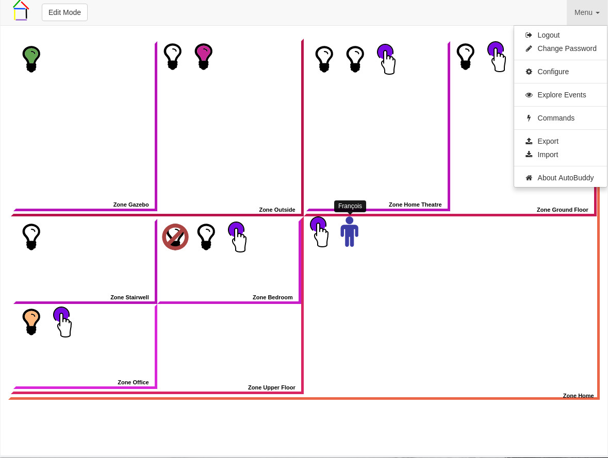
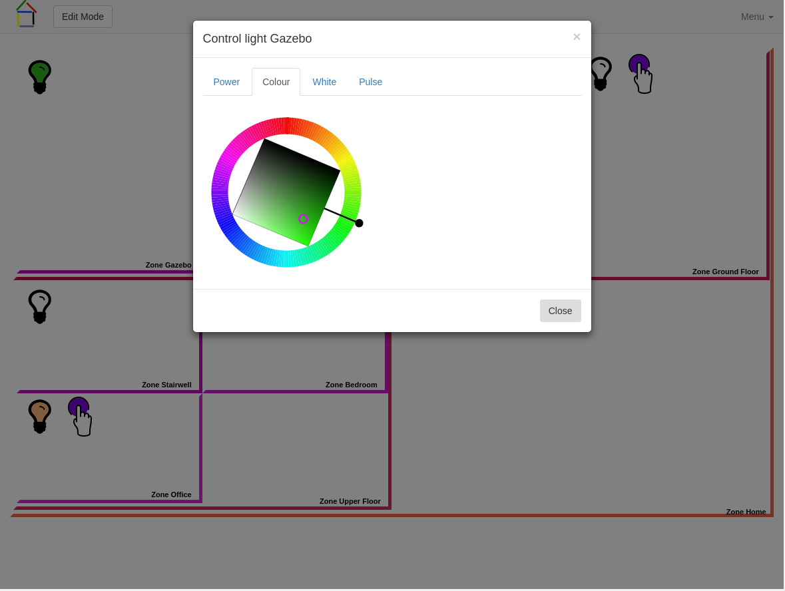

Introduction
AutoBuddy is a would-be home automation system written in his spare time by François Wautier. It is distributed under the MIT license.
This project was triggered by the purchase of a number of Lifx lightbulbs.
AutoBuddy consists in a number of pieces of software communicating via simple messaging bus. At this time, March 2017, it should be considered beta software. AutoBuddy requires Python 3.5 or above.
AutoBuddy's logo was designed by Khan Wautier.
Components
Buddylib
Buddylib is a python library that defines the element known to the AutoBuddy ecosystem. It defines zone, various devices as well as some generic bridge functionalities. Buddylib depends on SQLAlchemy.
ControlBuddy
ControlBuddy is at the heart of AutoBuddy. It multiplexes all the messages going in and out of the bus. It controls the zones and their associated devices. It provides persistence services to other components.
LifxBuddy
LifxBuddy is a bridge application that provides control to Lifx lightbulbs. It uses aiolifx to communicate with the lightbulbs.
FlicBuddy
FlicBuddy is a bridge application that provides access to Flic Smart Button. It uses aioflic and flicd, that can be found within fliclib-linux-hci to communicate with the buttons. FlicBuddy requires the exclusive us of a Bluetooth adapter. More than one BuddyFlic can run as long as they have different subtypes.
PresenceBuddy
PresenceBuddy is a bridge application that provides presence information based on devices' MAC addresses. It uses aioarping to track MAC addresses on your LAN and/or aiobtname to track Bluetooth MAC addresses. Tracking presence with Bluetooth is very reliable. Tracking presence using ARP request is much less reliable. We tested with LG G5, Samsung Galaxy 7, iPhone 4s, iPhone 7 all of them answered haphazardly to the ARP requests sent.
ActionBuddy
ActionBuddy is an application that processes events and act on them based on rules defined by the users. ActionBuddy also manages internal time events (granularity is 1 minute). ActionBuddy let the user define state variables and rules.
State variables can be of type:
- event
- Keep track of some event value (oor part thereof)
- simple
- A way too share information between rules
- counter
- Similar to a simple variable, but with interger operations.
- tracker
- A way to track entities associated with specific events/values.
- time
- A way to define time intervals
Rules are defined by:
- A trigger
- An event/value or the resulting value of a state variable after an event.
- A list of conditions
- Each condition testing the value of a state variable.
- A list of commands
- A list of commands to be executed if all the condition have been met after the rule was triggerred.
ActionBuddy will process all events in the following way:
- Update all the state variables that the event should update,
- Check what rules are triggerred,
- Check that all the conditions are met for the rules triggerred,
- If all checks, execute the commands.
With ActionBuddy you can define rule that:
- Create a nice light show at sunset
- Toggle a light at the push of a flic
- Restore the state of your light after a power outage
- Turns light On/Off depending on the time of day and the presence/absence of people
- Have your wife prepare you breakfast when you wake up..... Oh wait! That is not working yet.
- ...
SocketBuddy
SocketBuddy provides 2-way communication between websocket and the . It serves WebBuddy and also provides login service to WebBuddy. It uses aiohttp Python library.
WebBuddy
WebBuddy is AutoBuddy web application. It enables the user, to create zones, associate devices with zone, send commands to the devices/zones, manage users, define rules, and so on.
 WebBuddy depend on, among others:
- jQuery and jQuery-ui
- Bootstrap
- Bootstraps extensions: bootstrap-slider, bootstrap-switch, bootbox, ...
- BuddyWheel a SVG/Javascript colourwheel that is a sub-project of ours.
WebBuddy uses BuddyGuiLib to render all the command and configuration described in XML by each modules on the bus.
BuddyTools
BuddyTools is a set of tools that can be used to trigger event from other application. Currently there is:
- dhcp-event
- This tool is a PHP script that can be used with the dhcp server in dnsmasq to trigger
presence events based on dhcp lease events. It is a PHP script because I am using dd-wrt on my router and dd-wrt has a PHP interpreter but no
Python interpreter. It is used with the dhcp-script config option. Events send from this tool can be detected by PresenceBuddy even
when not using the ARPing method for presence. It generates dhcp events with as value a dictionary with
- status (online/offline)
- mac, the mac address
- ip, the ip address
- hostname
- apcupsd-event
- A python script meant to be used as powerout and mainsback scripts for apcupsd UPS monitoring daemon. It generates grid power events with value grid power on or grid power off
ConfigBuddy
ConfigBuddy is a an application use for the initial configuration of the system.
Others
As time goes by, many other components should appear here. For instance:
- LocationBuddy
- Locating people in specific zone
- VoiceBuddy
- Voice control
- HayoBuddy
- Support for Hayo
- ...
Documentation
Description of the messages and their function is somewhat documented on Google Drive.
Status
March 2017
System is soon to have its first release.
I have it installed on a Raspberry Pi 3 and I use it everyday. It just works.
Before release, I want to solve a couple of annoying bugs. I also want to add a location widget for BuddyGuiLib so that it is more convenient for people to set their location (needed for sunrise/sunset time) event though ConfigBuddy gets your location allright.
October 2015
System released on an unsuspecting world. Chaos may ensue.
The system is minimal. At this time we can
- Create zone
- Name zone
- Name device
- Associate devices with zone
- Control Lifx device (On/Off, Set Colour, Set White/Temperature
- On/Off devices in zone
- Manage users